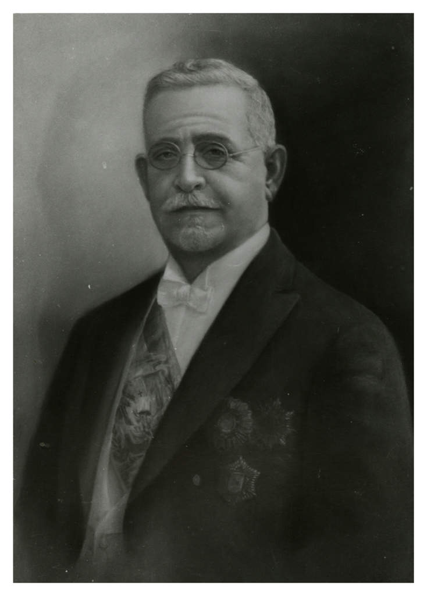

Profiles · Dominican RepublicPerfiles · República Dominicana
Horacio Vásquez
President of the Dominican Republic (provisional 1902-1903; 1924-1930); the last president before Trujillo, and the first elected after the United States occupation ended.Presidente de la República Dominicana (provisional 1902-1903; 1924-1930); el último presidente antes de Trujillo y el primero electo tras el fin de la ocupación de los Estados Unidos.
Also printed as: Horatio Vasquez · Horatio VasquesTambién impreso como: Horatio Vasquez · Horatio Vasques
Vásquez's career spans the whole struggle against and after Heureaux. He stood beside Ramón Cáceres at the Moca assassination in 1899, served as Jimenes's vice president and then ousted him in 1902, and headed a provisional government before yielding to the revolutions of 1903. In 1924, when the United States occupation ended, he became the republic's first president of the restored era, received in Washington by Commissioner Sumner Welles. Ill and aging, he was forced out by the Estrella Ureña movement in 1930 — the door through which Trujillo entered.La carrera de Vásquez abarca toda la lucha contra Heureaux y la etapa posterior. Estuvo junto a Ramón Cáceres en el asesinato de Moca en 1899, fue vicepresidente de Jimenes y luego lo expulsó en 1902, y encabezó un gobierno provisional antes de ceder ante las revoluciones de 1903. En 1924, al terminar la ocupación de los Estados Unidos, se convirtió en el primer presidente de la era restaurada, recibido en Washington por el comisionado Sumner Welles. Enfermo y envejecido, el movimiento de Estrella Ureña lo forzó a salir en 1930: la puerta por la que entró Trujillo.

1893–1899
A rebel before he was a nameRebelde antes de ser un nombre
He enters this archive in arms, six years before the shot that made him known. In March 1893 an insurgent force led by General Pablo Reyes and Horacio Vásquez crossed from Haiti into Dajabón to invade the Dominican Republic. Governor Anderson's government forces repulsed the invasion, with twelve deaths in the combat, and Haiti's President Hyppolite cooperated by disarming the retreating insurgents and deporting their leaders aboard the steamer Ozama to Turks Island (The Seattle Post-Intelligencer, April 3, 1893).Entra en este archivo en armas, seis años antes del disparo que lo hizo conocido. En marzo de 1893 una fuerza insurgente encabezada por el general Pablo Reyes y Horacio Vásquez cruzó desde Haití hacia Dajabón para invadir la República Dominicana. Las fuerzas del gobierno del gobernador Anderson repelieron la invasión, con doce muertos en el combate, y el presidente haitiano Hyppolite cooperó desarmando a los insurgentes en retirada y deportando a sus jefes a bordo del vapor Ozama hacia la isla Turks (The Seattle Post-Intelligencer, 3 de abril de 1893).
At Moca in July 1899 he stood in the first dispatch as one of three men: "the names of the assassins are Juan Pichardo, Horacio Vasquez, and Ramon Caceres, all prominent residents of Moca," The Evening Times reported, as the three opened fire on President Heureaux and escaped (The Evening Times, July 27, 1899). The revolutionists' own spokesman in New York insisted the killing was politics, not private vengeance: it was "the signal for the commencement of the uprising," Adriano Grullon stated, and Cáceres, Vásquez's cousin, had attacked with him "in broad daylight, in an open space, and not from ambush," outnumbered two to one by the president and his bodyguard (Springfield Weekly Republican, August 4, 1899).En Moca, en julio de 1899, apareció en el primer despacho como uno de tres hombres: «los nombres de los asesinos son Juan Pichardo, Horacio Vasquez y Ramon Caceres, todos residentes prominentes de Moca», informó The Evening Times, cuando los tres abrieron fuego sobre el presidente Heureaux y escaparon (The Evening Times, 27 de julio de 1899). El propio vocero de los revolucionarios en Nueva York insistió en que el hecho era política, no venganza privada: fue «la señal para el comienzo del levantamiento», declaró Adriano Grullon, y Cáceres, primo de Vásquez, había atacado con él «a plena luz del día, en un espacio abierto y no desde una emboscada», superados dos a uno por el presidente y su escolta (Springfield Weekly Republican, 4 de agosto de 1899).
Within a month the assassins were generals of a revolution. Cáceres, Vásquez and José Brache appeared before San Francisco de Macorís with 500 revolutionists, left their main force at the city entrance, and advanced with twenty men to demand Governor Castillo's surrender, under the war cry "Vive Jiminez! Down with Paper Currency!" (The San Francisco Call, August 25, 1899).En un mes, los asesinos eran generales de una revolución. Cáceres, Vásquez y José Brache se presentaron ante San Francisco de Macorís con 500 revolucionarios, dejaron su fuerza principal a la entrada de la ciudad y avanzaron con veinte hombres para exigir la rendición del gobernador Castillo, bajo el grito de guerra «¡Vive Jiminez! ¡Abajo el papel moneda!» (The San Francisco Call, 25 de agosto de 1899).
1899–1901
The man who would hand power overEl hombre que entregaría el poder
At Santiago the revolutionists formed a provisional government with General Vásquez as president and General Cáceres as minister of war (The Evening Tribune, September 1, 1899). It was a presidency held in trust, and he said so himself: elected president by the revolutionary chiefs, he told the Associated Press that a superior chief was needed to preserve public order and that he was ready to hand the government over to Jiminez whenever the people required it (The Indianapolis Journal, September 3, 1899).En Santiago, los revolucionarios formaron un gobierno provisional con el general Vásquez como presidente y el general Cáceres como ministro de Guerra (The Evening Tribune, 1 de septiembre de 1899). Era una presidencia en depósito, y él mismo lo dijo: electo presidente por los jefes revolucionarios, declaró a la Associated Press que se necesitaba un jefe superior para preservar el orden público y que estaba listo para entregar el gobierno a Jiminez cuando el pueblo lo requiriera (The Indianapolis Journal, 3 de septiembre de 1899).
The new consul general in New York spent that autumn denying that the trust concealed an ambition. There was no truth, Emilio Joubert stated, in rumors that General Horacio Vasquez harbored designs on the presidency; he was in complete accord with newly elected President Jiminez and would loyally support him in the office of vice president (The Indianapolis Journal, October 24, 1899).El nuevo cónsul general en Nueva York pasó ese otoño negando que el depósito ocultara una ambición. No había verdad, declaró Emilio Joubert, en los rumores de que el general Horacio Vasquez albergaba designios sobre la presidencia; estaba en completo acuerdo con el recién electo presidente Jiminez y lo apoyaría lealmente en el cargo de vicepresidente (The Indianapolis Journal, 24 de octubre de 1899).
As vice president he gave the archive its one long look at his mind. Interviewed in January 1901, he described the nation's abundant mineral resources, its copper, precious metals and vast salt reserves, and maintained that political stability had been quickly restored after Heureaux's assassination. His sharpest words were for the San Domingo Improvement Company, which, he asserted, had merely constructed a railroad with Dominican state funds, enriching itself, Heureaux and the financier Cosme Batlle at the country's expense (Evening Star, January 24, 1901).Como vicepresidente dio al archivo su única mirada larga a su pensamiento. Entrevistado en enero de 1901, describió los abundantes recursos minerales de la nación, su cobre, sus metales preciosos y sus vastas reservas de sal, y sostuvo que la estabilidad política se había restablecido rápidamente tras el asesinato de Heureaux. Sus palabras más duras fueron para la San Domingo Improvement Company, que, afirmó, se había limitado a construir un ferrocarril con fondos del Estado dominicano, enriqueciéndose a sí misma, a Heureaux y al financiero Cosme Batlle a costa del país (Evening Star, 24 de enero de 1901).
1902–1903
The vice president who took the capitalEl vicepresidente que tomó la capital
The accord lasted two years. By the first days of May 1902, revolutionists commanded by Vice President Vasquez controlled all of the republic except the capital and Puerto Plata, and he was expected to arrive before San Domingo that day, with the fall of the Jiminez government anticipated within hours (The Indianapolis Journal, May 3, 1902).El acuerdo duró dos años. Para los primeros días de mayo de 1902, los revolucionarios comandados por el vicepresidente Vasquez controlaban toda la república excepto la capital y Puerto Plata, y se esperaba su llegada ante San Domingo ese mismo día, con la caída del gobierno de Jiminez anticipada en cuestión de horas (The Indianapolis Journal, 3 de mayo de 1902).
His friends explained the break as a matter of money and honor: Vásquez had endeavored to support Jiminez, they said, until the president signed contracts financially harmful to the republic. The capital capitulated, Jiminez sought asylum in the French consulate, and the United States Navy dispatched the cruiser Cincinnati under rush orders to protect American interests (The Minneapolis Journal, May 5, 1902). The provisional government he then established was to remain in power until elections could be held, with peace fully restored in the south (The Portland Daily Press, May 7, 1902).Sus amigos explicaron la ruptura como un asunto de dinero y de honor: Vásquez había procurado apoyar a Jiminez, dijeron, hasta que el presidente firmó contratos financieramente dañinos para la república. La capital capituló, Jiminez buscó asilo en el consulado francés y la Marina de los Estados Unidos despachó al crucero Cincinnati con órdenes urgentes de proteger los intereses estadounidenses (The Minneapolis Journal, 5 de mayo de 1902). El gobierno provisional que entonces estableció permanecería en el poder hasta que pudieran celebrarse elecciones, con la paz plenamente restablecida en el sur (The Portland Daily Press, 7 de mayo de 1902).
His own provisional presidency lasted less than a year. In March 1903 the revolution of Alejandro Woss y Gil made itself master of the capital, his war and foreign ministers surrendered from refuge in the United States consulate, and Vásquez sailed from Puerto Plata for Sánchez aboard the cruiser Presidente, the only warship left to his government, planning an attack on the capital that never came (The Indianapolis Journal, March 26, 1903). A month later he landed at Guantánamo, Cuba, aboard a Dominican gunboat, his government resigned and in flight (Wheeling Register, April 28, 1903).Su propia presidencia provisional duró menos de un año. En marzo de 1903 la revolución de Alejandro Woss y Gil se hizo dueña de la capital, sus ministros de Guerra y de Relaciones Exteriores se rindieron desde su refugio en el consulado de los Estados Unidos, y Vásquez zarpó de Puerto Plata hacia Sánchez a bordo del crucero Presidente, el único buque de guerra que le quedaba a su gobierno, planeando un ataque sobre la capital que nunca llegó (The Indianapolis Journal, 26 de marzo de 1903). Un mes después desembarcó en Guantánamo, Cuba, a bordo de una cañonera dominicana, con su gobierno renunciado y en fuga (Wheeling Register, 28 de abril de 1903).
1906–1913
The Horacista chief, waitingEl jefe horacista, en espera
The papers of 1906 filed him as a faction. The Horacistas, one feature explained, were led by former President Horacio Vasquez and drew from the educated classes, relying on the civilian leader Emiliano Tejera and on General Ramon Caceres as their soldier (Milk River Valley News, February 21, 1906). That March, with Cáceres now president, the kinsmen staged their reconciliation in the road: Cáceres led five hundred horsemen twenty-five miles toward La Vega to escort Vásquez into the capital, with bands, festive decorations and a seventeen-gun salute from the fort, matched by the United States steamer Newport. The correspondent noted the bargain underneath the ceremony: Cáceres had previously intended to step aside in favor of Vásquez, but had resolved to remain (The New York Herald, March 21, 1906).Los periódicos de 1906 lo archivaron como una facción. Los horacistas, explicó una crónica, estaban encabezados por el expresidente Horacio Vasquez y se nutrían de las clases educadas, apoyándose en el líder civil Emiliano Tejera y en el general Ramon Caceres como su soldado (Milk River Valley News, 21 de febrero de 1906). Ese marzo, con Cáceres ya presidente, los parientes escenificaron su reconciliación en el camino: Cáceres encabezó a quinientos jinetes por veinticinco millas hacia La Vega para escoltar a Vásquez hasta la capital, con bandas, adornos festivos y una salva de diecisiete cañonazos desde el fuerte, respondida por el vapor estadounidense Newport. El corresponsal anotó el trato bajo la ceremonia: Cáceres había pensado antes retirarse en favor de Vásquez, pero había resuelto permanecer (The New York Herald, 21 de marzo de 1906).
The waiting turned to pressure. In February 1910 the New York Dominicans organized under General Vasquez, chief of the Horacista party to which Caceres also belonged, to demand governmental reforms from the president; in a formal letter to Caceres, Vasquez demanded the liberation of prisoners (New-York Tribune, February 28, 1910). By December he was in virtual exile, and the Tribune listed him among the opposition leaders watching the republic from abroad as Deschamps's arrival from Puerto Rico was read as the harbinger of an insurrection against Caceres (New-York Tribune, December 15, 1910).La espera se volvió presión. En febrero de 1910 los dominicanos de Nueva York se organizaron bajo el general Vasquez, jefe del partido horacista al que también pertenecía Caceres, para exigir reformas de gobierno al presidente; en una carta formal a Caceres, Vasquez exigió la liberación de los presos (New-York Tribune, 28 de febrero de 1910). Para diciembre estaba en un exilio virtual, y el Tribune lo contó entre los líderes opositores que observaban la república desde fuera, mientras la llegada de Deschamps desde Puerto Rico se leía como el heraldo de una insurrección contra Caceres (New-York Tribune, 15 de diciembre de 1910).
He was back in arms against President Bordas in 1913, and this archive meets him there through another man's headline: "SULLIVAN ENDS REBELLION." General Horatio Vasquez, leader of the Dominican revolution, had agreed that the revolutionists would suspend warfare, on a proposal made by the American minister, James M. Sullivan (Evening Star, September 20, 1913). Then the record goes quiet on him for the whole occupation decade. No subject record in this archive follows Vásquez between that armistice and the evacuation treaty of 1924.Volvió a las armas contra el presidente Bordas en 1913, y este archivo lo encuentra allí a través del titular de otro hombre: «SULLIVAN ENDS REBELLION» («Sullivan pone fin a la rebelión»). El general Horatio Vasquez, jefe de la revolución dominicana, había aceptado que los revolucionarios suspendieran la guerra, a propuesta del ministro estadounidense, James M. Sullivan (Evening Star, 20 de septiembre de 1913). Luego el registro guarda silencio sobre él durante toda la década de la ocupación. Ningún registro de este archivo sigue a Vásquez entre ese armisticio y el tratado de evacuación de 1924.
1924–1929
President of the restored republicPresidente de la república restaurada
When he re-enters the record, he is signing the occupation out of existence. The treaty with the United States providing for the evacuation of the Dominican Republic was signed at Santo Domingo on June 14, 1924; the provisional government was represented by General Horacio Vasquez, president-elect, Federico Velasquez and Francisco J. Peynado, and William W. Russell signed for the United States (Evening Star, June 14, 1924).Cuando reaparece en el registro, está firmando el fin de la ocupación. El tratado con los Estados Unidos que disponía la evacuación de la República Dominicana se firmó en Santo Domingo el 14 de junio de 1924; el gobierno provisional estuvo representado por el general Horacio Vasquez, presidente electo, Federico Velasquez y Francisco J. Peynado, y William W. Russell firmó por los Estados Unidos (Evening Star, 14 de junio de 1924).
Washington received him as a head of state before he was one. He arrived on June 21 and was formally welcomed at Union Station by Third Assistant Secretary of State J. Butler Wright and Sumner Welles, American commissioner to Santo Domingo (Evening Star, June 22, 1924). President and Mrs. Coolidge hosted a large luncheon at the White House in his honor, the first of a series of entertainments planned for the visiting president-elect (The Washington Times, June 23, 1924).Washington lo recibió como jefe de Estado antes de que lo fuera. Llegó el 21 de junio y fue recibido formalmente en Union Station por el tercer subsecretario de Estado J. Butler Wright y por Sumner Welles, comisionado estadounidense en Santo Domingo (Evening Star, 22 de junio de 1924). El presidente Coolidge y su esposa ofrecieron un gran almuerzo en la Casa Blanca en su honor, el primero de una serie de agasajos planeados para el presidente electo visitante (The Washington Times, 23 de junio de 1924).
His inauguration that July closed the long middle of his life. The Evening Star reported that it brought to a successful conclusion more than eight years of Dominican efforts to recover their national sovereignty from American military rule, with transports carrying the remaining 1,800 marines back to the United States (Evening Star, July 13, 1924).Su toma de posesión ese julio cerró el largo tramo central de su vida. El Evening Star informó que puso un término exitoso a más de ocho años de gestiones dominicanas por recuperar su soberanía nacional del gobierno militar estadounidense, con transportes que llevaban de regreso a los Estados Unidos a los 1.800 marines restantes (Evening Star, 13 de julio de 1924).
The restored presidency had its ceremonies. In July 1927 he departed for Port-au-Prince on the first visit ever made by a Dominican president to Haiti, accompanied by cabinet members and high military officials, to stay about eight days and discuss the boundary dispute dating back to French colonial times (Evening Star, July 30, 1927). In February 1928 Charles Lindbergh landed to a 21-gun presidential salute and was presented by President Vasquez with a key to the city and a gold medal on behalf of the republic (Evening Star, February 5, 1928).La presidencia restaurada tuvo sus ceremonias. En julio de 1927 partió hacia Puerto Príncipe en la primera visita jamás realizada por un presidente dominicano a Haití, acompañado de miembros del gabinete y altos oficiales militares, para permanecer unos ocho días y discutir la disputa fronteriza que databa de los tiempos coloniales franceses (Evening Star, 30 de julio de 1927). En febrero de 1928 Charles Lindbergh aterrizó ante una salva presidencial de 21 cañonazos y recibió del presidente Vasquez una llave de la ciudad y una medalla de oro en nombre de la república (Evening Star, 5 de febrero de 1928).
The last year of the presidency was a sick man's year. He received General Charles G. Dawes and his financial commission, tasked with stabilizing the republic's finances, in formal audience in April 1929 (New Britain Herald, April 3, 1929). In November he arrived by airplane in Miami, assisted as he stepped down from the plane, en route to Baltimore for urgent medical treatment (The Washington Daily News, November 5, 1929). Even the destination of the treatment was reported two ways: an imperative operation at the Mayo Clinic in Rochester, the presidential palace said; treatment in Baltimore, the Dominican legation said (Springfield Weekly Republican, November 7, 1929). Baltimore was where the sequel found him, improving at Johns Hopkins Hospital, his physicians saying a surgery initially considered necessary might no longer be required (Evening Star, November 10, 1929).El último año de la presidencia fue el año de un hombre enfermo. Recibió en audiencia formal, en abril de 1929, al general Charles G. Dawes y su comisión financiera, encargada de estabilizar las finanzas de la república (New Britain Herald, 3 de abril de 1929). En noviembre llegó en avión a Miami, ayudado al bajar de la aeronave, rumbo a Baltimore para un tratamiento médico urgente (The Washington Daily News, 5 de noviembre de 1929). Incluso el destino del tratamiento se reportó de dos maneras: una operación imperativa en la Clínica Mayo de Rochester, decía el palacio presidencial; tratamiento en Baltimore, decía la legación dominicana (Springfield Weekly Republican, 7 de noviembre de 1929). Baltimore fue donde lo encontró la secuela, mejorando en el Hospital Johns Hopkins, con sus médicos diciendo que una operación considerada necesaria al principio tal vez ya no lo fuera (Evening Star, 10 de noviembre de 1929).
1930–1936
February 1930Febrero de 1930
The end came in a week. On February 24, 1930, President Vasquez took command of the armed forces inside the Santo Domingo fortress following political disturbances, while Madame Vasquez sought refuge at the American embassy (The Bismarck Tribune, February 24, 1930). The unrest, the Evening Star reported the next day, was attributed to Vasquez's intention to seek re-election (Evening Star, February 25, 1930).El fin llegó en una semana. El 24 de febrero de 1930, el presidente Vasquez tomó el mando de las fuerzas armadas dentro de la fortaleza de Santo Domingo tras disturbios políticos, mientras la señora Vasquez buscaba refugio en la embajada estadounidense (The Bismarck Tribune, 24 de febrero de 1930). Los disturbios, informó el Evening Star al día siguiente, se atribuían a la intención de Vasquez de buscar la reelección (Evening Star, 25 de febrero de 1930).
By February 26 the insurgents had captured the capital's fortress and public buildings without bloodshed or loss of life (The Bismarck Tribune, February 26, 1930). Where the president himself had taken refuge, the papers could not agree: that day's Evening Star placed him in the French legation alongside Vice President Alfonseca (Evening Star, February 26, 1930), while the Springfield Weekly Republican's dispatch put him in the American legation in its body and in the French legation in its closing line (Springfield Weekly Republican, February 27, 1930).Para el 26 de febrero los insurgentes habían tomado la fortaleza y los edificios públicos de la capital sin derramamiento de sangre ni pérdida de vidas (The Bismarck Tribune, 26 de febrero de 1930). Sobre dónde se había refugiado el propio presidente, los periódicos no pudieron ponerse de acuerdo: el Evening Star de ese día lo situó en la legación francesa junto al vicepresidente Alfonseca (Evening Star, 26 de febrero de 1930), mientras el despacho del Springfield Weekly Republican lo puso en la legación estadounidense en su cuerpo y en la legación francesa en su línea de cierre (Springfield Weekly Republican, 27 de febrero de 1930).
The insurgents demanded his resignation, and he answered with a formality: he summoned a national assembly to present a presidential message and invited the diplomats and consuls in Santo Domingo to attend (Evening Star, February 27, 1930). The settlement that followed was constitutional in shape. Rafael Estrella Ureña would assume the duties of provisional president while President Vasquez was out of the country; Vasquez, traveling to Puerto Rico, would not return until after the May elections (Evening Star, March 2, 1930). He requested legislative permission to travel abroad due to ill health (Springfield Weekly Republican, March 6, 1930).Los insurgentes exigieron su renuncia, y él respondió con una formalidad: convocó una asamblea nacional para presentar un mensaje presidencial e invitó a asistir a los diplomáticos y cónsules en Santo Domingo (Evening Star, 27 de febrero de 1930). El arreglo que siguió fue constitucional en la forma. Rafael Estrella Ureña asumiría las funciones de presidente provisional mientras el presidente Vasquez estuviera fuera del país; Vasquez, viajando a Puerto Rico, no regresaría hasta después de las elecciones de mayo (Evening Star, 2 de marzo de 1930). Solicitó permiso legislativo para viajar al extranjero por razones de salud (Springfield Weekly Republican, 6 de marzo de 1930).
This archive's last subject word on him is a death notice carried far from home: a dispatch from Ciudad Trujillo reported that General Horacio Vasquez, former president of the Dominican Republic, died that Wednesday at his native town of Tamboril after a long illness (The Bismarck Tribune, March 25, 1936). After it, he survives in these pages only inside other men's stories, above all in the rise of the army chief who had held the Ozama fortress in February 1930 and stood aside.La última palabra de este archivo sobre él como sujeto es una nota necrológica llevada lejos de casa: un despacho desde Ciudad Trujillo informó que el general Horacio Vasquez, expresidente de la República Dominicana, murió ese miércoles en su pueblo natal de Tamboril tras una larga enfermedad (The Bismarck Tribune, 25 de marzo de 1936). Después de ella, sobrevive en estas páginas solo dentro de las historias de otros hombres, sobre todo en el ascenso del jefe del ejército que había ocupado la fortaleza Ozama en febrero de 1930 y se mantuvo al margen.
In this archiveEn este archivo
Nine reports that carry his story in this collection, from the 1893 crossing into Dajabón to the notice of his death at Tamboril:Nueve reportajes que cargan su historia en esta colección, desde el cruce de 1893 hacia Dajabón hasta la noticia de su muerte en Tamboril:
NEW YORK, April 2.—Advices from Cape Haytien, under the date of March 26NUEVA YORK, 2 de abril.—Noticias de Cabo Haitiano, con fecha del 26 de marzo
*The Seattle Post-Intelligencer* reported that an armed insurgent force led by General Pablo Reyes and Horacio Vásquez crossed from Haiti into*The Seattle Post-Intelligencer* informó que una fuerza insurgente armada encabezada por el general Pablo Reyes y Horacio Vásquez cruzó desde Haití
The Times prints a dispatch on the assassination and the State Department's confirmation of itThe Times imprime un despacho sobre el asesinato y la confirmación del Departamento de Estado
The Times prints a dispatch on the assassination and the State Department's confirmation of it: three men at once opened fire upon the president withEl Times publica un despacho sobre el asesinato y la confirmación del Departamento de Estado: tres hombres abrieron fuego de inmediato sobre el
Vasquez Did ItVasquez lo hizo
The *Minneapolis Journal* reported that Dominican Vice President Horacio Vásquez broke with President Juan Isidro Jimenes over detrimental financialEl *Minneapolis Journal* informó que el vicepresidente dominicano Horacio Vásquez rompió con el presidente Juan Isidro Jimenes por causa de contratos
The Evening Star prints an item under the head 'SULLIVAN ENDS REBELLION'The Evening Star imprime una nota bajo el titular 'SULLIVAN ENDS REBELLION'
The Evening Star prints an item under the head 'SULLIVAN ENDS REBELLION': New York, September 20. Gen. Horatio Vasquez, leader of the DominicanThe Evening Star publica una nota de Nueva York, 20 de septiembre, bajo el título 'SULLIVAN ENDS REBELLION': El general Horatio Vasquez, líder de la
SANTO DOMINGO, Republic of Domingo, June 14.—The treaty •with the United StatesSANTO DOMINGO, República de Domingo, 14 de junio.—El tratado con los Estados Unidos
A June 14 dispatch reports that the treaty with the United States providing for the evacuation of the Dominican Republic by American military forcesUn despacho del 14 de junio informa que en Santo Domingo se firmó el tratado con los Estados Unidos que disponía la evacuación de la República
Vasquez as president of the Dominican Republic brings to a successful end the long struggle of more than eight years byVásquez como presidente de la República Dominicana pone un término exitoso a la larga lucha de más de ocho años del
The *Evening star* reported that the inauguration of General Horacio Vasquez brought a successful conclusion to over eight years of Dominican effortsEl *Evening star* informó que la toma de posesión del general Horacio Vásquez puso un término exitoso a más de ocho años de gestiones dominicanas por
President Vasquez of the Dominican Republic departed on ThursdayEl presidente Vásquez de la República Dominicana partió el jueves
President Vasquez of the Dominican Republic departed on Thursday for Port-au-Prince, marking the first visit ever made by a Dominican president toEl presidente Vasquez de la República Dominicana partió el jueves hacia Puerto Príncipe, marcando la primera visita jamás realizada por un presidente
URENA SUCCEEDS TO VASQUEZ' POST Assumes Duties as Provisional President of Dominican Republic.Un despacho de la Associated Press desde Santo Domingo informa que Rafael Estrella Ureña
URENA SUCCEEDS TO VASQUEZ' POST Assumes Duties as Provisional President of Dominican Republic. will assume the duties of provisional president of the DominicanUreña sucede a Vásquez en el cargo. Asume las funciones de presidente provisional de la República Dominicana. asumirá las funciones de presidente provisional de la
At Grand Forks, all roads were reported blocked when a strongEn Grand Forks, se informó que todos los caminos estaban bloqueados cuando un fuerte
A dispatch from Ciudad Trujillo reported that Gen. Horacio Vasquez, former president of the Dominican Republic, died Wednesday at his native town ofUn despacho desde Ciudad Trujillo informó de que el general Horacio Vásquez, expresidente de la República Dominicana, murió el miércoles en su pueblo
Articles about Horacio VásquezArtículos sobre Horacio Vásquez · The Daily Critic, August 23, 1890The Daily Critic, 23 de agosto de 1890
This profile is sewn entirely from the articles in this archive. Every episode is cited to the newspaper and the date that reported it; where the papers disagree, the disagreement is left standing as part of the record. The papers in this archive disagree on where he took refuge in February 1930: the French legation, or the American legation.Este perfil está cosido por completo de los artículos de este archivo. Cada episodio se cita con el periódico y la fecha que lo reportó; donde los periódicos discrepan, la discrepancia se deja en pie como parte del registro. Los periódicos de este archivo difieren en el lugar donde se refugió en febrero de 1930: la legación francesa o la legación estadounidense.